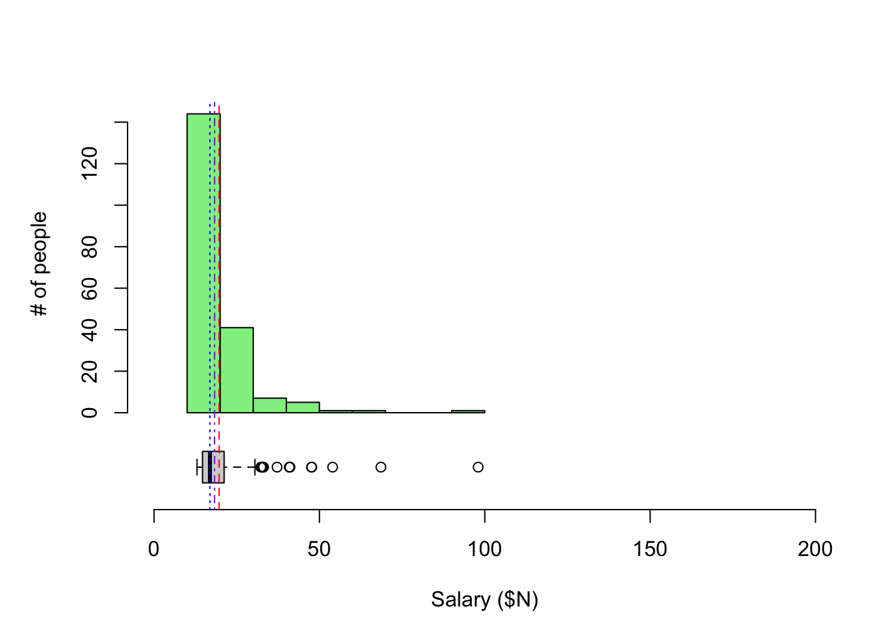

2.6 One Quantitative Variable
Next, we use data from one of the largest ongoing health studies in the USA, named NHANES. In particular, we will focus on data from the NHANES between 2009-2012 (Source: CDC). For more info about NHANES: https://www.cdc.gov/nchs/nhanes/index.htm.
Since sleep is vitally important to daily functioning, let’s look at the number of hours of sleep respondents reported.
2.6.1 Histogram
One main graphical summary we use for quantitative variables is a histogram. It resembles a bar plot, but there are a few key differences:
- The x-axis is a number line that is divided into intervals called bins. Bins technically do not all have to be of equal width but almost always are. When making histograms in R, R chooses a default bin width, but you have options to change the number and/or width of the bins/intervals.
- The height of the bars shows either the frequency within intervals (counts of units that fall into that bin/interval) or the density (fraction of units that fall into that bin/interval).
- Gaps between bars are meaningful. They indicate absence of values within an interval.
data(NHANES)
NHANES %>%
ggplot(aes(x = SleepHrsNight)) +
geom_histogram(fill = "steelblue") +
labs(x = 'Hours of Sleep (hours)', y = 'Counts') +
theme_classic() 
Note the warning message above: “Removed __ rows containing non-finite values (stat_bin).” Sometimes there is missing information for a variable for some units in the dataset. We cannot plot these because we don’t know their values! This warning message is just a friendly reminder from R to let you know what it is doing.
Also note the message that R gives about bin width to remind us that we can choose this if we wish. If we want to specify the width of the intervals or bins, we can specify binwidth = DESIRED_BIN_WIDTH within geom_histogram.
NHANES %>%
ggplot(aes(x = SleepHrsNight)) +
geom_histogram(binwidth = 1, fill = "steelblue") +
labs(x = 'Hours of Sleep (hours)', y = 'Counts') +
theme_classic() Lastly, notice that the y-axis in the previous two histograms has been the counts (or frequency) within each sleep hour interval. We can adjust this to density, which is relative frequency adjusted for the width of interval so that the sum of the areas of the bars (height x width) equals 1.
NHANES %>%
ggplot(aes(x = SleepHrsNight)) +
geom_histogram(aes(y = ..density..), binwidth = 1, fill = "steelblue") +
geom_density(alpha = 0.2, fill = "steelblue", adjust = 3) +
labs(x = 'Hours of Sleep (hours)', y = 'Density') +
theme_classic() The smooth curved line on this plot is called a density plot. It is essentially a smoother version of the histogram. Both the area under a density plot and the total area of all the rectangles in a density histogram equal 1.
When describing a distribution, we focus on three aspects of the histogram:
- Shape: Is it symmetric (can you fold it in half and the sides match up)? or is it skewed to the right or left? (A distribution is left-skewed if there is a long left tail and right-skewed if it has a long right tail.) How many modes (“peaks”/“bumps” in the distribution) do you see?
- Center: Where is a typical value located?
- Spread (or variation): How spread out are the values? Concentrated around one or more values or spread out?
- Unusual features: Are there outliers (points far from the rest)? Are there gaps? Why?
Here is another data set for comparison. Here are the annual salaries for the highest paid CEOs in 2016 (Source: NYTimes). To get the data, we are scraping the data from a NYTimes website. For fun, you can look at the code below.
Let’s create a density histogram of the annual salaries for the highest paid CEO’s in the U.S. in 2016.
ceo %>%
ggplot(aes(x = salary)) +
geom_histogram(aes(y = ..density..), binwidth = 5, fill = "steelblue") +
geom_density(alpha = 0.2, fill = "steelblue") +
labs(x = 'Salary ($ Millions)', y = 'Density') +
theme_classic() 
We note that some of the highest salaries were close to 200 million U.S. dollars (in 2016), but the majority of the salaries in this sample are closer to 50 million U.D. dollars.
Is this distribution of salaries left-skewed or right-skewed? In what populations do you think salaries might be left-skewed? Right-skewed?
2.6.2 Center
There are some choices for numerically summarizing the center of a distribution:
- Mean: The sum of the values divided by the number of values (sample size), \(\bar{y} = \frac{\sum^n_{i=1}y_i}{n}\)
- Sensitive to outliers, but it efficiently uses all the data
- Median: The “middle” value. The number for which half of the values are below and half are above.
- Insensitive to outliers, but it doesn’t use all the actual values
- Trimmed means: Drop the lowest and highest k% and take the mean of the rest.
- A good compromise, but not widely used.
The Greek capital letter sigma, \(\sum\), is used in mathematics to denote a sum. We let \(y_i\) represent the value of the \(i\)th person for a variable called \(y\). So \(\sum^n_{i=1}y_i\) is the sum of all the \(n\) values of a variable \(y\), all the way from the 1st person to the \(n\)th person.
We can calculate all of these in R.
- Hours of sleep per night from the NHANES dataset
## SleepHrsNight
## Min. : 2.000
## 1st Qu.: 6.000
## Median : 7.000
## Mean : 6.928
## 3rd Qu.: 8.000
## Max. :12.000
## NA's :2245NHANES %>%
summarize(
mean(SleepHrsNight, na.rm = TRUE),
median(SleepHrsNight, na.rm = TRUE),
mean(SleepHrsNight, trim = 0.05, na.rm = TRUE)) # na.rm = TRUE removes missing values ## # A tibble: 1 × 3
## mean(SleepHrsNight, na.rm = TR…¹ median(SleepHrsNight…² mean(SleepHrsNight, …³
## <dbl> <int> <dbl>
## 1 6.93 7 6.95
## # ℹ abbreviated names: ¹`mean(SleepHrsNight, na.rm = TRUE)`,
## # ²`median(SleepHrsNight, na.rm = TRUE)`,
## # ³`mean(SleepHrsNight, trim = 0.05, na.rm = TRUE)`- CEO salary information from NYT
## salary
## Min. :13.00
## 1st Qu.:14.68
## Median :16.90
## Mean :19.67
## 3rd Qu.:21.20
## Max. :98.00## mean(salary) median(salary) mean(salary, trim = 0.05)
## 1 19.6715 16.9 18.30056Note that the mean, median, and trimmed mean are all fairly close for the sleep hours distribution, which looks fairly symmetric.
Note also that the mean, median, and trimmed mean are somewhat different for the salary distribution, which looks right skewed. Often with right skewed distributions, the mean tends to be higher than the median because particularly large values are being summed in the calculation. The median and trimmed mean are not as sensitive to these outliers because of the sorting that is involved in their calculation.
2.6.3 Boxplot
An alternative graphical summary is a boxplot, which is a simplification of the histogram. The plot consists of
- A Box: the bottom of the box is at the 25th percentile (\(Q1\)) and top of the box is at the 75th percentile (\(Q3\))
- Line in Box: the line in the middle of the box is at the 50th percentile, the median
- Tails/Whiskers: The lines extend out from the box to most extreme observed values within \(1.5 \times (Q3-Q1)\) from \(Q1\) (bottom) or \(Q3\) (top)
- Points: If any points are beyond \(1.5 \times (Q3-Q1)\) from the box edges, they are considered outliers and are plotted separately
A percentile is a measure indicating the value below which a given percentage of observations in a group of observations fall. So the 25th percentile is the value at which 25% of the values are below. The 95th percentile is the point at which 95% of the observations are below.
Here is a boxplot of the sleep amount from NHANES.
NHANES %>%
ggplot(aes(y = SleepHrsNight)) +
geom_boxplot() +
ylab('Hours of Sleep (hours)') +
theme_classic() Compare that to the boxplot of the CEO salaries.
Note: In these 2 plots above, the x-axis has number labels, but they don’t mean anything.
Let’s put the boxplots next to the histograms so we can better compare the two types of visualizations. Also, let’s add the mean (red dashed), median (blue dotted), and 5% trimmed mean (purple dash-dot) as annotations.
For the hours of sleep, the mean, median, and 5% trimmed mean are all pretty much the same. Note also that the distribution looks pretty symmetric based on the histogram.

For CEO salaries, the mean and 5% trimmed mean are a bit higher than the median. The mean is always pulled toward the long tail.
What would the boxplot look like if all of the values were exactly the same? Sometimes when making multiple boxplots for each of multiple groups, a group may only have one value or a small number of values that all happen to be identical. What will this look like?
2.6.4 Spread
There are some choices for numerically summarizing the spread of a distribution:
- Range: the maximum value - the minimum value
- Sensitive to the outliers since it’s the difference of the extremes
- Units (e.g. inches, pounds) are the same as the actual data
- IQR: the interquartile range : \(Q3 - Q1\) (75th percentile - 25th percentile).
- Length of the box in a boxplot
- Spread of middle 50% of data
- Like the median. Less sensitive because it doesn’t use all of the data
- Units are the same as the actual data
- Standard deviation (SD): Root mean squared deviations from mean, \(s_y = \sqrt{\frac{\sum^n_{i=1}(y_i-\bar{y})^2}{n-1}}\)
- Roughly the average size of deviation from the mean (\(n-1\) instead of \(n\))
- Uses all the data but very sensitive to outliers and skewed data (large values are first squared).
- Units are the same as the actual data
- Variance: Square of the standard deviation
- Units are the squared version of the actual data’s units (e.g. squared inches, pounds)
- Standard deviation is preferred for interpretability of units
- Variance will come up when we discuss models in the next chapter
We can calculate all of these in R.
- Hours of sleep per night from the NHANES dataset
NHANES %>%
summarize(
diff(range(SleepHrsNight, na.rm = TRUE)),
IQR(SleepHrsNight, na.rm = TRUE),
sd(SleepHrsNight, na.rm = TRUE),
var(SleepHrsNight, na.rm = TRUE))## # A tibble: 1 × 4
## diff(range(SleepHrsNight, na.r…¹ IQR(SleepHrsNight, n…² sd(SleepHrsNight, na…³
## <int> <dbl> <dbl>
## 1 10 2 1.35
## # ℹ abbreviated names: ¹`diff(range(SleepHrsNight, na.rm = TRUE))`,
## # ²`IQR(SleepHrsNight, na.rm = TRUE)`, ³`sd(SleepHrsNight, na.rm = TRUE)`
## # ℹ 1 more variable: `var(SleepHrsNight, na.rm = TRUE)` <dbl># range gives max and min; take difference betwee max and min
# IQR = Q3-Q1
# sd = standard deviation
# var = variance- CEO salary information from NYT
## diff(range(salary)) IQR(salary) sd(salary) var(salary)
## 1 85 6.525 9.452969 89.358632.6.5 Some data accounting
We’ve looked at different measures of the spread of a distribution. Do some measures of spread encompass a lot of the data? Just a little? Can we be more precise about how much of the data is encompassed by intervals created from different spread measures?

What percentage of the data is between the blue dotted lines (length of interval is range)?
What percentage of the data is between the purple solid lines (length of interval is IQR)?
What percentage of the data is between the green dashed lines (length of interval is 2*SD)?
The code below computes the fraction of data points, x, that fall between the lower bound of 1 SD below the mean and the upper bound of 1 SD above the mean.
## [1] 0.6766667So with this data set, about 68% of the data values fall within 1 SD of the mean.
If we had a different data set, do you know that answer to the following questions? You should know the answer to 2 of them at this point…
-
What percentage of the data would be between the minimum and maximum (blue dotted lines above)?
-
What percentage of the data would be between bottom and top of the box (purple solid lines above)?
-
What percentage of the data would be between 1 SD below the mean and 1 SD above the mean (green dashed lines)?
2.6.6 Z-scores
How do you decide when an outlier is really unusual (think: athletic victory being very impressive or a data point that may be a typing error such as a human weight of 3000 lbs)?
If the observation is far from the rest of the measurements in the data, we tend to say that the value is unusual. We want to quantify this idea of “unusual”.
To do this, we often calculate a z-score, a standardized data value which we denote with the letter, \(z\). To calculate a z-score,
- Calculate how far an observation, \(y\), is below (or above) the mean of the sample, denoted as \(\bar{y}\).
- Then divide the difference by the standard deviation (measure of spread), denoted as \(s_y\).
\[ z = \frac{y - \bar{y}}{s_y} \]
The z-score tells you how many standard deviations the observation is above or below the mean.
Say that you got a z-score of 1 on an exam with mean = 80 and SD = 5. That means that you got an 85 on the exam because your exam is one SD above the mean (\(mean + z \times SD = 80 + 1 \times 5\)).
If you got a z = -2 on an exam with mean = 80 and SD = 5, that means you got a 70 on the exam because your exam is two SD below the mean (\(mean + z \times SD = 80 + -2 \times 5\)).
In general, it is quite common to have z-scores between -3 and 3, but fairly unusual to have them greater than 3 or less than -3.
Often, if you have data with a unimodal, symmetric distribution,
- about 68% of the z-scores are between -1 and 1,
- about 95% of the z-scores are between -2 and 2,
- about 99.7% of the z-scores are between -3 and 3.
This is not true for every histogram, but it will be true for a particularly special distribution that we will see later when we cover models. (This distribution is called the normal distribution or Gaussian distribution.)
However, we do know that z-scores of 5 or larger in magnitude (ignoring negative sign) are very unusual, no matter the shape of the histogram/distribution. For those inclined, see the mathematical theorem below that tells us this.
(Optional) Chebyshev’s inequality gives bounds for the percentages no matter the shape of the distribution. It states that for any real number \(k\) > 0, the chance of getting a z-score greater in magnitude (ignoring the negative sign) than \(k\) is less than or equal to \(1/k^2\),
\[P\left(|Z| \geq k\right) \leq \frac{1}{k^2}\] where \(Z = \frac{|X - \mu|}{\sigma}\) is a z-score, \(\mu\) is the mean, and \(\sigma\) is the standard deviation.
If we plug in values for \(k\), we see that the chance of getting a z-score
- at least 3 in magnitude (> 3 or < -3) is less than \((1/3^2) = 0.11 = 11\%\).
- at least 4 in magnitude (> 4 or < -4) is less than \((1/4^2) = 0.06 = 6\%\).
- at least 5 in magnitude (> 5 or < -5) is less than \((1/5^2) = 0.04 = 4\%\).
This is true for any shaped distribution (skewed, bimodal, etc.). See proof here based on probability theory.
In summary, for a quantitative variable,
- Use a histogram to display the distribution of one variable and describe the shape and any unusual features.
- For “well-behaved” distributions (symmetric, unimodal, no outliers), use the mean and standard deviation to describe the center and spread. Then z-scores will roughly follow the 68-95-99.7 rule stated above.
- For other distributions (skewed or bimodal), use the IQR and median. You can report both mean and median, but it’s usually a good idea to state why.